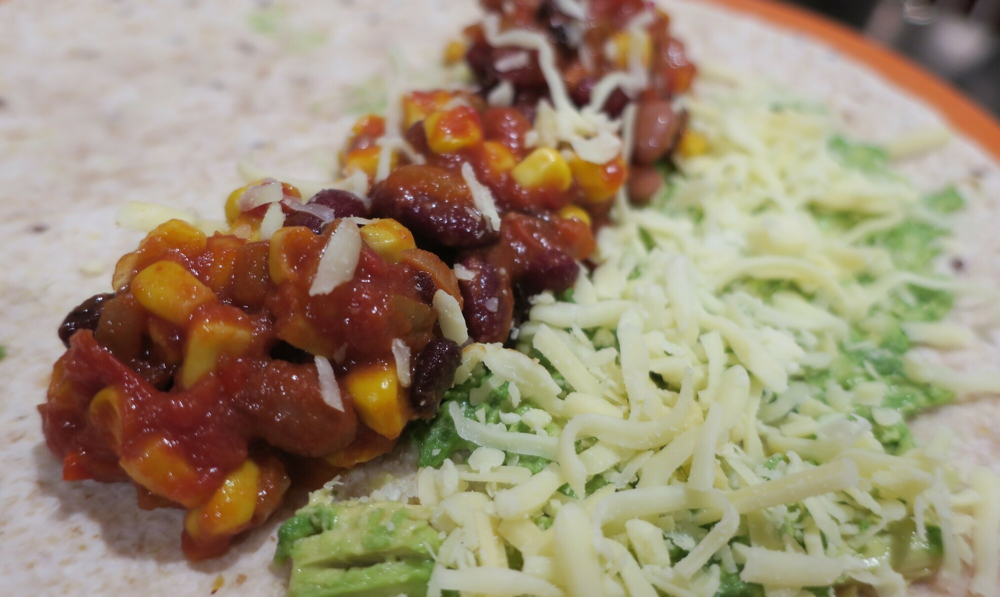

Mexican Mix
 Meat
Meat
This is our go to mexican mix. Make into burritos or nachos.

1red onionsomechillisomemushroomssomeoil
Chop up red onion, chilli, and mushrooms (optional) and fry in oil until brown.
1 canblack beans1 candiced tomatoes1/2 cupcornsomemexican spice mix
Mix in black beans, diced tomatoes, corn, and mexican spice mix and cook for a few more minutes.
someavocadosomecheese
Serve with avocado and cheese